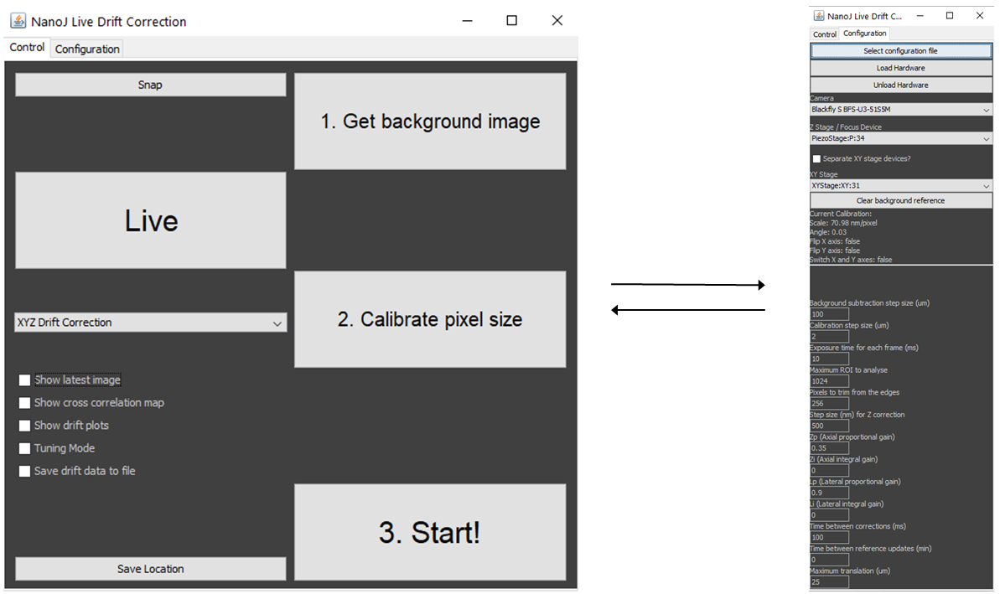
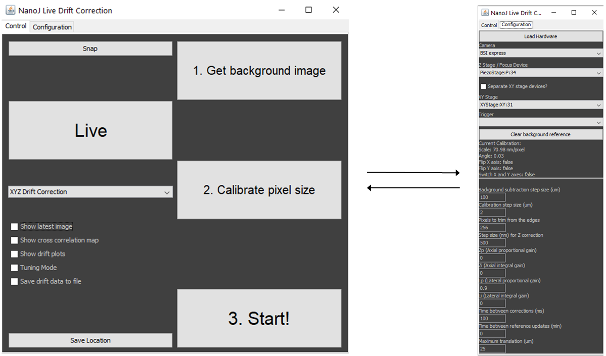
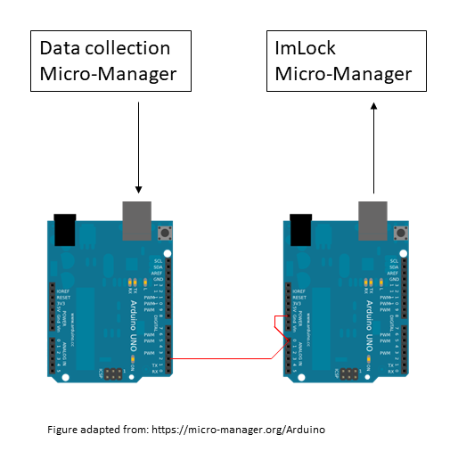

Description
This module provides the capability for infra-red brightfield imaging concurrently with visible band fluorescence. This hardware is combined with custom software to conduct image based, deep autofocus at up to 50 microns in depth. We have found this especially useful in imaging samples set in PDMS-microholes (used in Whitley et al Nat Commun 2021) where the cells themselves are held away from the cover surface.

Parts
If you are adding this to an existing system it can be simpler to add hardware after the camera port. If this is the case we recomend using a TwinCam to give a second pathway for the IR camera.
Construction
👁 View CAD Design Online 👁
As this module has only one pathway and few degrees of freedom for adjustment it can be constructed and attached to the system simply following the designs. The combiner cube is the only part that needs alignment and this is detailed in the Main Body module.
To add the ImLock to an existing microscope system we recomend adding the second camera after the camera port for simplicity. This can be done easily using products such as CAIRN's TwinCam.
In principle this sytem can operate at a range of wavelengths. However, the suggested camera suffers from reduced sensitivity into the IR range. As such, poor performance has been observed when operating this system at 1050nm due to low SNR. To achieve a sufficient SNR whilst avoiding clashes with the CRISP system operating at 940nm we recomend operating with 850nm illumination.

Software
This is a MicroManager hardware autofocus plugin developed between the Henriques and Holden laboratories. This plugin will perform microscopy autofocus and lateral drift correction using the cross correlated signal from infrared brightfield microscopy. It is based on the principle described in McGorty et al, Optical Nanoscopy 2013. As such, this software is not coupled to any particular hardware and may be used with cameras and stages other than those described here.
The original version of the plugin works within a single instance of micromanager. However, when using this with cameras other than the Blackfly camera in the parts-list we frequently see issues. A second version is available that will run in a separate instance of micromanager to the data aquisition which avoids these problems. This version also works with the Blackfly camera so use whichever suits you best.
Instructions: Please select a version
This is the primary version of ImLock. It is designed to work within a single instance of micromanager alongside data collection. Testing with a few cameras has yielded mixed results so if this fails with your camera please try the other version.
Installation
👁 Get Software from GitHub 👁From the folder "dist" in the GitHub repository, copy "ImLock.jar" and the content of the "lib" folder into the Micromanager "plugins/micro-manager" directory. In the case of these files already existing in the target directory, the target directory files should be retained.
The camera used for this module must be added to a MicroManager config file separate from the main system config file. Instructions are available here to install the correct drivers for the Blackfly camera.
The plugin may now be launched in MicroManager from "plugins/Beta/ImLock". On opening the Config file containing the camera's device adapter should be loaded using the "select configuration file" and "load hardware" buttons under the configuration tab (This will happen automatically on subsequent openings).
Use
The plugin does not have the ability to trigger the illumination LED so this must be controlled manually. If using this as part of the LifeHack system this can be done through MicroManager. Our testing has been conducted with the Tiger Controller's MAINTAIN(MA) setting set to "3 - Motors on during wait time".
To use the plugin, First "get background image" to perform background subtraction. The stage will scan around the sample to record multiple fields of view for averaging.
Next "calibrate pixel size" to calculate the pixels-to-nm conversion factor and axis orientations. The stage will move laterally in user-defined steps and calculate the pixel displacements by cross-correlation.
"Start" takes a reference z-stack (if using XYZ or Z correction) or a single reference image (if using XY correction) and begins the drift correction protocol selected using the pulldown menu.
The tick-box options on the control panel are mostly self explanitory. "Show drift plots" produces plots of the live position reading to aid with setting gains(described in "Variables").
If "Save drift data to file" is ticked, positions will be saved in a columnwise ".csv" file with columns "time, x, y, z".
Variables
Configuration Tab
- Background subtraction step size: Lateral move between background subtraction images. We find that a step size of 50 um works well.
- Calibration step size: Lateral move between images during the pixels-to-nm calibration routine. We find that a step size of 1-5 um works well.
- Exposure time: Exposure time of the camera, should be balanced to minimise LED power and motion blur.
- Maximum ROI to analyse: Sets the size of the area to perform cross-correlation on. The limits of this are camera-dependent. Larger fields of view will require more processing time but use more of the sample to lock on to.
- Pixels to trim from edges: Removes edge pixels from cross-correlation calculations. Can be used to speed up processing if the camera has a minumum ROI limit.
- Step size for Z correction: Sets the depth between the images of the reference z-stack taken at the beginning of a run.
- Zp (Axial proportional gain): Proportional gain sets the strength of correction relative to the position error. higher values will cause faster responses but can lead to overcorrections. A value of 1 is a good starting point
- Zi (Axial integral gain): Integral gain used to correct for a stable offset from the zero position. Can induce oscillations if too strong. Often this value can be left at 0
- Lp (Lateral proportional gain): Proportional gain sets the strength of correction relative to the position error. higher values will cause faster responses but can lead to overcorrections. A value of 1 is a good starting point
- Li (Lateral integral gain): Integral gain used to correct for a stable offset from the zero position. Can induce oscillations if too strong. Often this value can be left at 0
- Time between corrections: Sets the dwell time between stage corrections to avoid high frequency corrections to noise. Must be set greater than the set exposure time.
- Time between reference updates: Sets the time between updates to the reference stack. Useful if your sample changes significantly over time. Setting to 0 turns this feature off.
- Maximum translation: Limit on shift to prevent stage crashing.
Advanced Tab
- Lateral Gain Bias: Bias of gain between X and Y axies. Positive values bias towards X and negative towards Y. Should not be needed for most systems.
- Axial Dead Zone (nm): Minimum move command that will be sent to the Z stage. Any smaller corrections will be ignored. Useful for stages with poor encoder resolution (usually not needed for piezo stages). Set to the same as the encoder resolution if you see odd behaviour when set to 0.
- Lateral Dead Zone (nm): Minimum move command that will be sent to the XY stage. Any smaller corrections will be ignored. Useful for stages with poor encoder resolution. Set to the same as the encoder resolution if you see odd behaviour when set to 0.
This is a secondary version designed to work robustly with any camera normally supported by Micro-Manager. It is designed to work within a second instance of Micro-Manager seperate to data collection. Working in separate Micro-Manager instances means some features require additional hardware so try the other version first.
Installation
👁 Get Software from GitHub 👁From the folder "dist" in the GitHub repository, copy "ImLock.jar" and the content of the "lib" folder into the Micromanager "plugins/micro-manager" directory. In the case of these files already existing in the target directory, the target directory files should be retained.
The camera and stages used must be added to a MicroManager config file. Use this config file when launching Micro-Manager.
The plugin may now be launched in MicroManager from "plugins/Beta/ImLock". On opening the plugin will use the configuration already loaded by micromanager.
Use
The plugin does not have the ability to trigger the illumination LED so this must be controlled manually. If using this as part of the LifeHack system this can be done through MicroManager. Our testing has been conducted with the Tiger Controller's MAINTAIN(MA) setting set to "3 - Motors on during wait time".
To use the plugin, First "get background image" to perform background subtraction. The stage will scan around the sample to record multiple fields of view for averaging.
Next "calibrate pixel size" to calculate the pixels-to-nm conversion factor and axis orientations. The stage will move laterally in user-defined steps and calculate the pixel displacements by cross-correlation.
"Start" takes a reference z-stack (if using XYZ or Z correction) or a single reference image (if using XY correction) and begins the drift correction protocol selected using the pulldown menu.
The tick-box options on the control panel are mostly self explanitory. "Show drift plots" produces plots of the live position reading to aid with setting gains(described in "Variables").
If "Save drift data to file" is ticked, positions will be saved in a columnwise ".csv" file with columns "time, x, y, z".
Variables
Configuration Tab
- Background subtraction step size: Lateral move between background subtraction images. We find that a step size of 50 um works well.
- Calibration step size: Lateral move between images during the pixels-to-nm calibration routine. We find that a step size of 1-5 um works well.
- Exposure time: Exposure time of the camera, should be balanced to minimise LED power and motion blur.
- Maximum ROI to analyse: Sets the size of the area to perform cross-correlation on. The limits of this are camera-dependent. Larger fields of view will require more processing time but use more of the sample to lock on to.
- Pixels to trim from edges: Removes edge pixels from cross-correlation calculations. Can be used to speed up processing if the camera has a minumum ROI limit.
- Step size for Z correction: Sets the depth between the images of the reference z-stack taken at the beginning of a run.
- Zp (Axial proportional gain): Proportional gain sets the strength of correction relative to the position error. higher values will cause faster responses but can lead to overcorrections. A value of 1 is a good starting point
- Zi (Axial integral gain): Integral gain used to correct for a stable offset from the zero position. Can induce oscillations if too strong. Often this value can be left at 0
- Lp (Lateral proportional gain): Proportional gain sets the strength of correction relative to the position error. higher values will cause faster responses but can lead to overcorrections. A value of 1 is a good starting point
- Li (Lateral integral gain): Integral gain used to correct for a stable offset from the zero position. Can induce oscillations if too strong. Often this value can be left at 0
- Time between corrections: Sets the dwell time between stage corrections to avoid high frequency corrections to noise. Must be set greater than the set exposure time.
- Time between reference updates: Sets the time between updates to the reference stack. Useful if your sample changes significantly over time. Setting to 0 turns this feature off.
- Maximum translation: Limit on shift to prevent stage crashing.
Advanced Tab
- Lateral Gain Bias: Bias of gain between X and Y axies. Positive values bias towards X and negative towards Y. Should not be needed for most systems.
- Axial Dead Zone (nm): Minimum move command that will be sent to the Z stage. Any smaller corrections will be ignored. Useful for stages with poor encoder resolution (usually not needed for piezo stages). Set to the same as the encoder resolution if you see odd behaviour when set to 0.
- Lateral Dead Zone (nm): Minimum move command that will be sent to the XY stage. Any smaller corrections will be ignored. Useful for stages with poor encoder resolution. Set to the same as the encoder resolution if you see odd behaviour when set to 0.
Multi-Dimensional Acquisitions (Optional)
To perform imaging across multiple fields of view and or Z-stacks while using this version of ImLock, add an Arduino uno to the Micro-Manager config file. This will need to be set up as an "Arduino-Input" device.
Upon opening the ImLock plugin go to the configuration panel and select the Arduino using the "Trigger" pulldown. The plugin is now set up to recieve external interupt commands via the Arduino.
If using Micro-Manager for data collection you will need to add a second arduino to the config file for the data collection instance of Micro-Manager. This will need to be set up as an "Arduino-Shutter" device with the output wired as below. Within Micromanager set this up as a Multi-shutter device with your acquisition shutter so that the two are triggered together. Connect this Arduino to the first Arduino as its input and the two instances of micromanager will be able to talk to eachother.
If you are using other software you will need your own way of providing the interupt signals to the input Arduino, cairn-research may be able to help with this.